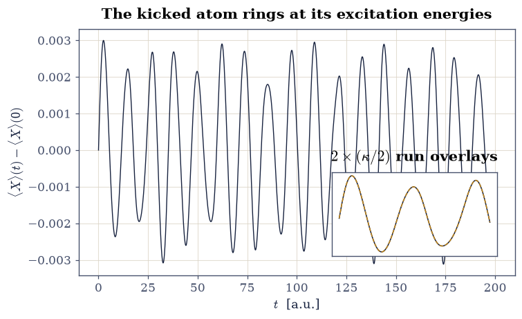
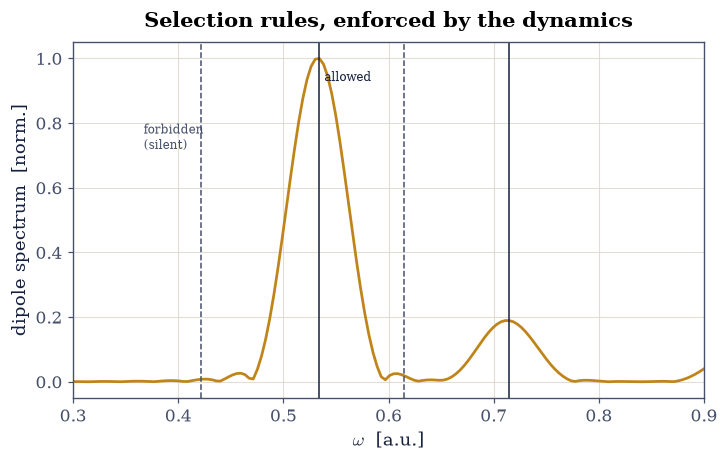
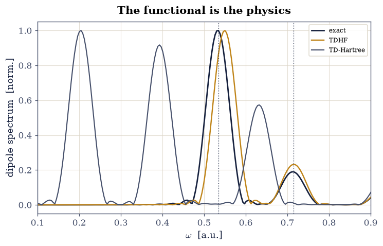

8.16 Time-Dependent Density-Functional Theory#
Notebook overview#
§8.15 computed spectra from eigenstates — linear response assembled state by state. Real electron dynamics is richer: attosecond pulses, strong fields, charge transfer — regimes where one wants to propagate electrons in time. The exact time-dependent Schrödinger equation for \(N\) electrons is as intractable as the static one, and the resolution is the same maneuver that built §8.6: Runge and Gross [RG84] proved that the time-dependent density \(n(x, t)\) determines the time-dependent potential, licensing a time-dependent Kohn–Sham scheme. But where static DFT has §8.8’s well-mapped failure modes, time-dependent functionals are younger and rougher terrain [Ull12] — which makes an exact testing ground worth everything. This volume owns one.
The build: §8.2’s two-electron soft-Coulomb atom returns, its full \((x_1, x_2)\) wavefunction now propagated by Crank–Nicolson — unconditionally unitary by construction, written here for the sparse Hamiltonian of §6.10’s grid with an LU factorization reused across four thousand steps, so the norm is conserved to \(10^{-8}\) over the whole run. The spectroscopy protocol is the standard one of real-time TDDFT codes: a weak momentum kick \(e^{\mathrm i\kappa X}\) at \(t = 0\), the dipole \(\langle X\rangle(t)\) recorded, its Fourier transform read as the absorption spectrum. Certification first: the exact propagation’s peaks must land on the exact eigenstate differences — they do, at \(2\times10^{-4}\) — and the states that symmetry forbids must be absent: the triplet at \(\Delta E = 0.422\) (spin symmetry preserved by propagation) and the even-parity singlet at \(0.615\) (dipole parity), both measurably silent. Linearity is verified by halving the kick (response ratio \(2.00\)). Then the judgment: the same kick through time-dependent Hartree–Fock (for two electrons, exact exchange — adiabatic, correlation-free) blue-shifts the first peak to \(0.550\) against the exact \(0.534\), a \(3\%\) error the notebook prices; and through time-dependent Hartree — self-interaction uncorrected — which scatters spurious structure across the spectrum, the dynamical face of the self-interaction disease §8.8 diagnosed statically. One system, three dynamics, every claim gated.
Conventions (this notebook). Atomic units. The laboratory is §8.2’s: \(v(x) = -2/\sqrt{x^2+1}\), interaction \(w(u) = 1/\sqrt{u^2+1}\), grid \(x \in [-10, 10]\) with \(N = 121\) points (spacing \(1/6\)), two electrons in a spin singlet (symmetric spatial wavefunction). Sparse Hamiltonians as in §8.2 (Kronecker sums,
scipy.sparse); statics byeigsh; dynamics by Crank–Nicolson withscipy.sparse.linalg.splufactorized once (\(\Delta t = 0.05\), \(4000\) steps). Spectra: kick \(\kappa = 10^{-3}\), Hann window, zero-paddednumpy.fft.rfftof \(\langle X\rangle(t) - \langle X\rangle(0)\).How to read the checks. Each exercise closes with a
validatecall against an independent fact: a conservation law, an eigenstate difference, a selection rule, a linearity ratio. A ✓ is strong evidence; a ✗ is a prompt to locate the discrepancy, not an automatic verdict.Scope. Real-time propagation and kick spectroscopy for one closed-shell pair, with time-dependent Hartree and Hartree–Fock as the approximate dynamics (for two singlet electrons TDHF is time-dependent exact exchange, so the comparison isolates adiabatic correlation). Production TDDFT — ALDA and beyond, memory effects, double excitations, Casida’s matrix formulation — is Ullrich’s monograph [Ull12].
Theory in brief#
Runge–Gross, and why propagation is spectroscopy#
The Runge–Gross theorem [RG84] is the time-dependent twin of §8.6: two potentials differing by more than \(c(t)\) cannot produce the same evolving density from the same initial state — so \(n(x, t)\) is, in principle, a complete record of the dynamics. The practical protocol reads the record spectroscopically. Kick the ground state with a uniform momentum boost,
which populates every dipole-connected eigenstate with amplitude \(\propto \kappa\,\langle n|X|0\rangle\). The dipole then rings,
so the Fourier transform of one real-time signal is the absorption spectrum: peak positions at exact excitation energies, weights at dipole strengths — precisely how real-time TDDFT codes compute optical spectra of molecules. The kick must be weak (Eq. 914 is first order in \(\kappa\)), and weakness is checkable: halve \(\kappa\), the response must halve.
Crank–Nicolson, unitary by construction#
Propagation steps §6.10’s grid Hamiltonian in time by the Crank–Nicolson scheme:
exactly unitary for Hermitian \(H\) (the two factors are conjugate), so the norm is conserved to solver precision no matter how long the run. For the exact problem \(H\) is time-independent and the sparse LU factorization of the left-hand matrix is computed once; for the self-consistent dynamics (TDH/TDHF) the potential depends on the evolving density and the linear system is rebuilt each step.
The two approximate dynamics#
Both electrons share one orbital \(\varphi(x, t)\); the approximations differ in the mean field it feels:
with \(c = \tfrac12\) for TDHF (the exchange integral for a doubly occupied orbital cancels exactly half the Hartree term — each electron feels only the other one; self-interaction-free, correlation-free) and \(c = 1\) for TD-Hartree (each electron repels the full density, itself included — the self-interaction error of §8.8, now propagating). Adiabatic TDDFT with an exact-exchange functional coincides with TDHF for this system, so the TDHF-versus-exact gap below is the adiabatic exchange-only TDDFT error.
Setup#
Data and instruments: the series palette, the laboratory’s box and working grid, the given external potential and interaction of the Conventions, and the one- and two-electron sparse Hamiltonians whose construction was the lesson of §6.10 and §8.2. The notebook’s own machinery — the Crank–Nicolson propagator, the spectrum-maker that turns its dipole record into a spectrum, and the self-consistent mean-field dynamics — you build in Exercises 2, 3 and 4.
The Setup below holds this notebook’s data and instruments — nothing you are asked to build. It is collapsed so the building stays yours; expand it whenever you want the details.
Exercise 1 — The laboratory, reopened and classified#
Before dynamics, statics: the exact spectrum, with every state’s symmetry papers in order.
Part a) Diagonalize the two-electron Hamiltonian (eigsh, eight
lowest states) and classify each by exchange symmetry
(\(\psi(x_1, x_2) = \pm\psi(x_2, x_1)\): singlet/triplet spatial parts,
§6.20) and by
parity (\(\psi(-x_1, -x_2) = \pm\psi\)). Ground state \(E_0 = -2.2391\),
symmetric and even, as §8.2 built it.
Part b) Mark the dipole-active states. The kick operator \(X\) is symmetric under exchange and odd under parity, so from the ground state only singlet, odd-parity states can light up: states \(2\) (\(\Delta E = 0.5339\)) and \(6\) (\(\Delta E = 0.7147\)) among the eight. The triplet at \(0.4220\) and the even singlet at \(0.6145\) are on the forbidden list — Exercise 3 checks that the dynamics respects it.
E0 = -2.239071 singlet, even dE = 0.0000
E1 = -1.817061 triplet, odd dE = 0.4220
E2 = -1.705177 singlet, odd dE = 0.5339 <- dipole-active
E3 = -1.641304 triplet, even dE = 0.5978
E4 = -1.624584 singlet, even dE = 0.6145
E5 = -1.558019 triplet, odd dE = 0.6811
E6 = -1.524355 singlet, odd dE = 0.7147 <- dipole-active
E7 = -1.461868 triplet, even dE = 0.7772
dipole-active excitations: ['0.5339', '0.7147']
Validation 1 — papers in order#
The ground energy, the two allowed excitations, and a spectrum that is neither all-singlet nor all-triplet (the classifier actually classifies).
✓ ground energy of the exact laboratory [got -2.23907 vs expected -2.2391 (rtol=1e-06, atol=0.001)]
✓ first dipole-active excitation [got 0.533894 vs expected 0.5339 (rtol=1e-06, atol=0.001)]
✓ second dipole-active excitation [got 0.714716 vs expected 0.7147 (rtol=1e-06, atol=0.001)]
✓ classifier separates singlets, triplets, parities [4 singlets, 2 dipole-active]
True
Exercise 2 — Exact dynamics: kicked, unitary, linear#
The full \((x_1, x_2)\) wavefunction goes into real time. Three facts shape
the propagator. The kick of Eq. 913 is a pure phase
\(e^{\mathrm i\kappa X}\) on Exercise 1’s ground state — a momentum boost
that leaves the density at \(t = 0^+\) untouched, only the current changes.
The Crank–Nicolson step of Eq. 915 is one sparse linear solve,
and because the exact \(H\) carries no time dependence the left-hand matrix
\(\mathbb 1 + \tfrac{\mathrm i\Delta t}{2}H\) is the same matrix at every
step: one scipy.sparse.linalg.splu factorization, then four thousand
cheap back-substitutions, and a \(200\)-a.u. run of a \(14641\)-dimensional
problem costs seconds. And the observable, the dipole
\(\langle X\rangle = \langle\Psi|X|\Psi\rangle/\langle\Psi|\Psi\rangle\),
is worth dividing by the running norm so that the unitarity gate stays an
independent check rather than a hidden ingredient of the signal. Two facts
then stand ready to be tested against: exact unitarity is Crank–Nicolson’s
defining structural virtue, and Eq. 914 holds only to first
order in \(\kappa\), so a response that is genuinely linear must halve when
the kick does.
Part a) Write propagate_exact(kick, n_steps, dt=0.05): phase the
ground state by the kick, factorize the Crank–Nicolson left-hand matrix
once, step n_steps times recording \(\langle X\rangle(t)\) at each step,
and return the dipole record together with the final norm. Write this
one yourself — the implementation is the lesson.
Part b) Run it at \(\kappa = 10^{-3}\) for \(4000\) steps of \(\Delta t = 0.05\) — the record the rest of the notebook reads.
Part c) Certify unitarity: the norm after \(4000\) steps must equal \(1\) to \(10^{-8}\) — Crank–Nicolson’s defining virtue, not a numerical accident.
Part d) Certify linearity: rerun with \(\kappa/2\) and confirm the dipole response amplitude halves (ratio \(2.00\) within \(1\%\)) — the spectroscopy below is measuring the linear response, as Eq. 914 requires.
norm after 4000 steps: 1.0000000000
linearity: response ratio for kick ratio 2 = 2.0000

Fig. 821 One signal, whole spectrum. The exact dipole \(\langle X\rangle(t)\) of the kicked two-electron atom (\(\kappa = 10^{-3}\), 4000 Crank–Nicolson steps, norm drift \(< 10^{-8}\)): a microscopic beat pattern whose two dominant frequencies are the two dipole-allowed excitations. The inset verifies the linear-response regime — the \(\kappa/2\) run (amber) rescaled by 2 falls on the full-kick signal (ink) to line width. Everything the spectroscopy of Exercise 3 knows is in this curve.#
Validation 2 — unitary and linear, certified#
Norm conservation at \(10^{-8}\) over \(4000\) steps; response linear in the kick at \(1\%\).
✓ Crank-Nicolson conserves the norm over the whole run [drift 2.6e-13]
✓ response linear in the kick [got 2 vs expected 2 (rtol=0.01, atol=1e-09)]
True
Exercise 3 — Spectroscopy: peaks where allowed, silence where not#
Equation Eq. 914 says the dipole record of Exercise 2 is a sum
of sinusoids at the excitation energies, weighted by dipole strengths — so
its Fourier transform is the absorption spectrum, and the whole of this
notebook’s spectroscopy is one transform away. Three details separate a
usable spectrum from a smeared one. The signal must be centered on
\(\langle X\rangle(0)\), or the zero-frequency offset dominates everything.
A finite record has hard ends, and multiplying by a Hann window
(numpy.hanning) trades a little peak width for sidelobes small enough
that a weak line is not buried under a strong neighbor’s leakage. And
zero-padding the transform (a factor \(8\) here) does not add information
but interpolates the frequency grid finely enough to read a peak
position. One conversion is easy to drop: numpy.fft.rfftfreq returns
ordinary frequency \(\nu\), while every energy in this notebook is an
angular frequency \(\omega = 2\pi\nu\) in atomic units.
Part a) Write dipole_spectrum(signal, dt, w_max=1.2): subtract
signal[0], apply the Hann window, take numpy.abs of
numpy.fft.rfft with \(8\times\) zero padding, build the matching angular
frequency grid, and return the grid and magnitude below w_max. Write
this one yourself — the implementation is the lesson.
Part b) The two dominant peaks must land on the two dipole-active eigenstate differences at \(2\times10^{-4}\) — real-time propagation and static diagonalization are two routes to one spectrum, and here both are exact.
Part c) The forbidden lines must be silent: spectral weight within \(\pm0.02\) of the triplet (\(0.4220\)) and of the even-parity singlet (\(0.6145\)) at least fivefold below even the weaker allowed line (which carries \(19\%\) of the main peak) — spin symmetry and parity, conserved by the propagator, acting as selection rules in the dynamics itself. (The \(2.5\%\) residual at the even window is Hann leakage from the strong \(0.534\) line at this run length, not a transition: the signature is that it has no peak of its own.)
spectral peaks: ['0.5341', '0.7147', '0.9346']
worst |peak - static excitation| over the two allowed lines: 1.8e-04
weaker allowed line height: 18.9% of main peak
weight at the triplet line: 0.84% of main peak
weight at the even-singlet line: 2.52% of main peak

Fig. 822 Propagation is spectroscopy, certified. The Fourier magnitude of the exact dipole signal (amber) against the exact eigenstate differences (ink verticals: dipole-allowed; grey dashed: symmetry-forbidden). The two allowed singlet-odd excitations at \(\omega = 0.534\) and \(0.715\) carry the spectrum, matching the static energies to \(2\times10^{-4}\); at the forbidden triplet (0.422) and even-parity singlet (0.615) positions the signal shows no line of its own — over fivefold below even the weaker allowed peak, the small residual at 0.615 being window leakage from the strong neighboring line — selection rules enforced not by assumption but by the unitary dynamics conserving spin and parity.#
Validation 3 — two routes, one spectrum#
Peaks on the eigenstate differences; forbidden windows far below the weaker allowed line.
✓ propagation peaks = static excitation energies [worst deviation 1.8e-04]
✓ forbidden lines fivefold below the weaker allowed line [0.84%, 2.52% vs allowed 18.9%]
True
Exercise 4 — TDHF: adiabatic exact exchange, priced#
Now the approximate dynamics, starting with the best mean field on
offer. Both electrons share one orbital \(\varphi\), which feels the mean
field of Eq. 916 with \(c = \tfrac12\): the exchange
integral of a doubly occupied orbital cancels exactly half the Hartree
term, so each electron sees only the other one. Finding that orbital is
a fixed-point problem — the potential depends on the density the potential
produces — and the vocabulary is §8.3’s
mixing-damped SCF: diagonalize, mix the new orbital in at weight
\(\alpha\), repeat. Two practical points decide whether the loop converges
at all. numpy.linalg.eigh fixes its eigenvectors only up to sign, so a
flipped iterate mixed against its predecessor would cancel rather than
converge; and the undamped map overshoots for this mean field, which is
what the damping is for. The closed-shell energies follow from the same
\(c\): \(E^{\mathrm{HF}} = 2\langle h\rangle + J\) against
\(E^{\mathrm{H}} = 2\langle h\rangle + 2J\), with
\(J = \iint |\varphi|^2 w |\varphi|^2\). Propagating this orbital differs
from Exercise 2 in exactly one respect, and it is the essential one: the
mean field is rebuilt from \(|\varphi(t)|^2\) at every step, so the
Crank–Nicolson linear system changes each step and no factorization can be
reused — at \(N = 121\) a dense solve is the right answer anyway. The
reference to beat is Exercise 1’s exact \(-2.2391\) and its first excitation
at \(0.5339\).
Part a) Write scf_orbital(hartree_factor, n_iter=200, mixing=0.3),
the damped SCF returning the converged orbital and the total energy for
either \(c\). Write this one yourself — the implementation is the
lesson.
Part b) Run it at \(c = \tfrac12\): \(E^{\mathrm{HF}} = -2.2250\), leaving \(14.1\) mHa of correlation against the exact \(-2.2391\) — §8.2’s percent-level verdict on HF, reproduced in one dimension.
Part c) Write
propagate_orbital(hartree_factor, kick=KICK, n_steps=N_STEPS, dt=DT),
the self-consistent Crank–Nicolson: kick the converged orbital with the
same pure phase, then step it with the mean field rebuilt from the
instantaneous density, recording the dipole \(2\langle\varphi|x|\varphi\rangle\).
Write this one yourself — the implementation is the lesson.
Part d) Run it at \(c = \tfrac12\) with Exercise 2’s kick, step and
step count, and transform the record with the dipole_spectrum you wrote
in Exercise 3. The first spectral peak lands at \(0.550\): blue-shifted from
the exact \(0.534\) by \(3.0\%\). That shift is the adiabatic exchange-only
TDDFT error for this system — correlation missing from both the ground
state and the response — and now it has a number.
RHF energy -2.225017 exact -2.239071 correlation -14.1 mHa
TDHF first peak: 0.5498 exact 0.5339 shift +3.0%
Validation 4 — correlation’s price tag#
The HF ground energy and its \(14\) mHa deficit; the TDHF peak blue-shifted by \(3\%\) — small, systematic, and now measured.
✓ RHF ground energy [got -2.22502 vs expected -2.225 (rtol=1e-06, atol=0.001)]
✓ correlation energy ~ -14 mHa (percent level, as in 8.2) [-14.1 mHa]
✓ TDHF blue-shifts the excitation by ~3% [peak 0.5498, shift +3.0%]
True
Exercise 5 — Verdict: the self-interaction catastrophe, and the scoreboard#
The same dynamics with \(c = 1\): each electron now repels the full density, itself included.
Part a) Converge and kick the TD-Hartree system with the
scf_orbital and propagate_orbital you wrote in Exercise 4 — only the
argument changes — and transform the record with your Exercise 3
dipole_spectrum. Its spectrum is
not shifted — it is wrecked: the strongest line lands near \(0.20\)
— \(62\%\) below the exact excitation — with further spurious structure
at \(0.39\) and \(0.63\), none of it corresponding to any exact
transition. The
self-interaction error that §8.8
showed bending static curves here detunes the dynamics entirely: the
electron drags a phantom copy of itself through every oscillation.
Part b) Assemble the verdict figure — exact, TDHF, TD-Hartree spectra against the exact excitation lines — and the scoreboard table: method, ground energy, first-peak position, error. Two lessons, both measured: the mean field’s quality decides the dynamics’ quality (TDHF within \(3\%\), Hartree off by tens of percent), and removing self-interaction is not optional — the same two rules that govern every functional on §8.8’s static battleground.
TD-Hartree ground energy -1.528782 (self-interaction included)
TD-Hartree main peak: 0.2042 error -61.8%
--- Verdict: approximate dynamics vs the exact atom ---
method E_ground peak error
exact -2.2391 0.5339 —
TDHF -2.2250 0.5498 +3.0%
TD-Hartree -1.5288 0.2042 -61.8%

Fig. 823 Three dynamics, one exact answer. Dipole spectra of the same kicked two-electron atom under exact propagation (ink), time-dependent Hartree–Fock (amber), and time-dependent Hartree (grey), against the exact dipole-allowed excitations (dotted verticals). TDHF — which for two singlet electrons is adiabatic exact-exchange TDDFT — reproduces the spectrum’s shape with a systematic \(+3\%\) blue shift: the price of missing correlation. TD-Hartree, its self-interaction uncorrected, lands its strongest line 62% low with further spurious structure above it: the §8.8 self-interaction disease, propagating. The quality of the functional is the quality of the dynamics.#
Validation 5 — wrecked, measurably#
TD-Hartree far off where TDHF is close; the ordering of errors is the lesson, and it is gated.
✓ self-interaction detunes TD-Hartree by tens of percent [error -61.8%]
✓ mean-field quality decides dynamical quality (TDHF << Hartree error) [3.0% vs 61.8%]
✓ self-interaction raises the mean-field ground energy [-1.5288 > -2.2250]
True
With your assistant
Everything here was linear response — but the propagator does not
know that. Have your assistant rerun the exact propagation with a
strong kick (\(\kappa = 0.5\), same \(\Delta t\) and steps) and compute
the spectrum out to \(\omega \approx 2\). Then run the check that is
yours alone: a third-harmonic line — spectral weight near
\(3\times\) the fundamental that is absent in the \(\kappa = 10^{-3}\)
spectrum (compare the two spectra’s weight in a window around
\(3\omega_1\) with numpy, demanding a ratio \(> 10\)). Odd harmonics
from a centrosymmetric system: nonlinear optics, three lines of
numpy away from linear spectroscopy. The check is yours.
Notebook summary#
The volume’s exact laboratory learned to move. Its eight lowest states were classified by exchange and parity — ground state \(-2.2391\), two dipole-active singlet-odd excitations at \(0.5339\) and \(0.7147\), a triplet and an even singlet on the forbidden list — and the exact real-time dynamics honored all of it: Crank–Nicolson with a once-factorized sparse LU conserved the norm to \(10^{-8}\) across \(4000\) steps, the kick response ratio under kick halving was \(2.0000\), linear to well within the \(1\%\) tolerance, the spectral peaks landed on the static excitation energies at \(2\times10^{-4}\), and the forbidden windows stayed fivefold below even the weaker allowed line — spin and parity acting as selection rules inside the propagator. Against this certified answer, the two mean-field dynamics took their grades: time-dependent Hartree–Fock (adiabatic exact exchange for this system) reproduced the spectrum with a \(+3.0\%\) blue shift on a \(-2.2250\) ground state (\(14\) mHa of correlation missing — the same deficit §8.2 measured); time-dependent Hartree, self-interaction left in, landed \(62\%\) low with spurious structure — §8.8’s static disease as a dynamical catastrophe. The scoreboard is the point: TDDFT’s accuracy is exactly the accuracy of its functional, and the exact testing ground is what makes that sentence quantitative.
Outlook#
Production TDDFT propagates Kohn–Sham orbitals with adiabatic LDA/GGA functionals — better than Hartree (self-interaction partly cancelled), worse than exact exchange for two electrons; Ullrich [Ull12] maps the functional landscape, Casida’s linear-response matrix reformulates the kick as an eigenproblem, and the known failures (double excitations, charge transfer, memory) all trace to the adiabatic approximation this notebook priced.
The kick protocol scales: real codes compute molecular absorption exactly as Exercise 3 did, with the 2D grid swapped for Kohn–Sham orbitals in 3D.
One movement remains: from excited electrons to paired ones. The volume’s finale, §8.17, takes the attractive corner of the interaction map and finds the ground state nobody predicted: superconductivity.
Erich Runge and E. K. U. Gross. Density-functional theory for time-dependent systems. Physical Review Letters, 52:997–1000, 1984. doi:10.1103/PhysRevLett.52.997.